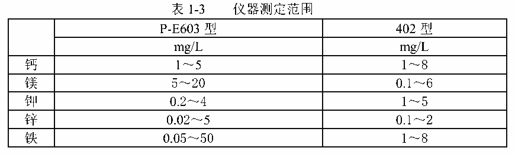
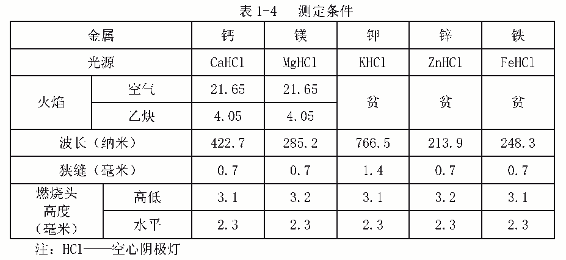

9.金属离子的测定——火焰原子吸收分光光度法
本方法适用范围和干扰情况。
·用美国 P-E603 型和国产 402 型仪器测定范围如表 1-3 所示。

·钙、镁用空气——乙炔火焰测定时，样品中含有铝、硅、锡、磷酸盐、硫酸盐等会引
起化学干扰，用加入释放剂镧的方法可抑制此干扰。
·钾是碱金属，其电离电位低，在火焰中容易产生干扰，用加入钠作“消电离剂”的方
法，可抑制干扰。
·当水中含有小于 9000mg/L 的钠、钾、硫酸盐和氯化物；小于 4000mg/L 的钙、镁；小
于 2000mg/L 的硝酸盐和小于 10mg/L 的铬、铅、铜、镍、钴、镉时，对锌的测定无干扰。
·当水中含有小于 5000mg/L 的钠、钾、钡、氯化物和硫酸盐；小于 100mg/L 的钙、镁、
铬、锰、钴、铜、锌、铅、银、镉、锡、钯、锂、汞、铝、锑、砷、硫、硼、钼时，对铁的
测定无干扰。
1．原理
用火焰原子吸收分光光度计测定金属离子时，将样品直接吸入到原子化器中进行雾化。
在火焰的高温作用下被热解为基态的原子，此基态原子吸收由该元素制作的光源灯发射的特
征波长光的能量，而且火焰中被吸收的特征波长光的能量与样品中元素的浓度成正比，由检
测器将吸收值转入信号系统，根据吸收值计算出样品中的金属含量。
各元素空心阴极灯用的波长
钙 422.7nm
镁 285.2nm
钾 766.5nm
锌 213.9nm
铁 248.3nm
采用直接测定或标准加入法均可。
2．试剂
2．1 所用试剂水均为去离子水。
2．2 镧溶液
称取 58.65g 氧化镧（La2O3）溶于 250mL 浓盐酸中，缓慢加热，直到试剂完全溶解，移
入 1000mL 容量瓶中，用水稀释至刻度。
2．3 1000mg/L 钠标准溶液
称取 2.540g 于 500～600℃灼烧至恒重的氯化钠（NaCl）， 溶于水，移入 1000mL 容量瓶
中，稀释至刻度。
2．4 100mg/L 钙标准溶液
称取 0.25g 于 105～110℃干燥至恒重的碳酸钙 （CaCO3）溶于 10mL 含有 1mL 盐酸的水中，
移入 1000mL 容量瓶中，稀释至刻度。
2．5 100mg/L 镁标准溶液
称取 0.166g 于 800℃灼烧至恒重的氧化镁（MgO）， 溶于 2.5mL 盐酸及少量水中，移入
1000mL 容量瓶中，稀释至刻度。
2．6 100mg/L 钾标准溶液
称取 0.191g 于 500～600℃灼烧至恒重的氯化钾（KCl）， 溶于水，移入 1000mL 容量瓶
中，稀释至刻度。
2．7 100mg/L 锌标准溶液
称取 0.125g 氧化锌（ZnO）， 溶于 100mL 水及 1mL 硝酸中，移入 1000mL 容量瓶中，稀释
至刻度。
2．8 100mg/L 铁标准溶液
称取 0.864g 硫酸铁铵[FeNH4（SO4） 2·12H2O]溶于水，加 2.5ml 硝酸，移入 1000mL 容
量瓶中，稀释至刻度。
3．仪器
3．1 火焰原子吸收分光光度计。
3．2 光源：空心阴极灯（分别为钙、镁、钾、锌、铁）。
3．3 助燃气：经过滤后的空气。
3．4 燃气：乙炔。
3．5 减压阀。
3．6 玻璃器皿：实验所用的各种规格的移液管、烧杯、容量瓶等，均用 1+2 硝酸浸泡24 小时后，用水洗净待用。
4．分析步骤
4．1 试样的制备
4．1．1 取适量水样将其酸化至 pH 约为 2，过滤后待用。
4．1．2 污垢样品，称取经缩分污垢样品约 1g，在电阻炉中约 700℃下灼烧 2 小时后，
加约 20mL 浓盐酸，在电炉上蒸发至近干，然后加约 20mL 浓硝酸，加热煮沸 1 分钟，冷却后
过滤，将滤液移入 1000mL 容量瓶中，稀释至刻度。
4．2 试样溶液的制备
直接移取 4.1.1 或 4.1.2 适量的试样于 50mL 容量瓶中，其中除钙、镁及垢样需加入 5mL5%
氧化镧溶液外，其它都用水稀释至刻度。
4．3 空白试样的制备
取适量的试剂水于 50mL 容量瓶中，其中钙、镁及垢样需加 5mL5%氧化镧溶液，测定钾
时需加钠的标准溶液，其它只需酸化至 pH 为 2（或﹤2）， 用水稀释至刻度。
4．4 校正溶液的制备
分别吸取不同量的钙、镁、钾、锌、铁标准溶液至 5 个 50mL 容量瓶中，其中钙和镁及
垢样分别加入 5mL5%氧化镧溶液，测定钾时需加钠的标准溶液，其它都需酸化，用水稀释至
刻度。
4．5 校正和测定
4．5．1 测定条件见表 1-4。
4．5．2 校正曲线的绘制
分别吸入钙、镁、钾、锌、铁的标准溶液，在最佳的工作条件下，测其吸光度，以每一
标准溶液的吸光度为纵坐标，以浓度为横坐标，绘制校正曲线，除铁外，应为通过原点的直
线。
4．5．3 空白试验
吸入 4.3 空白试验溶液在最佳工作条件下，测其吸光度。
4．5．4 样品的测定
吸入 4.2 试样，在最佳工作条件下测其吸光度。

5．分析结果计算
根据 4.5.4 测得的试样吸光度，在 4.5.2 绘制的校正曲线上查得其对应的浓度值，
该试样的浓度按下式计算：
样品中的金属含量 = 试样浓度×稀释倍数
计算铁离子含量时，延长 4.5.2 所绘制的曲线与浓度轴相交，查其交点对应的浓度值，
即为试样浓度。
6．精密度
6．1 灵敏度
本方法测定钙灵敏度 0.054μg/mL/1%；
本方法测定镁灵敏度 0.007μg/mL/1%；
本方法测定钾灵敏度 0.04μg/mL/1%；
本方法测定锌灵敏度 0.017μg/mL/1%；
本方法测定铁灵敏度 0.12μg/mL/1%。
6．2 检测极限
钙：0.01μg/mL；
镁：0.001μg/mL；
钾：0.01μg/mL；
锌：0.003μg/mL；
铁：0.02μg/mL。
6．3 精密度
当钙含量≥1μg/mL 时，其变异系数≤0.84%；
当镁含量<0.1μg/mL 时，其变异系数≤1%；当镁含量≥0.2μg/mL 时，其变异系数≤
0.72%；
当钾含量为 0.4mg/L 时，其变异系数为 1.3%；当钾含量≥0.8mg/L 时，其变异系数≤
0.75%；
当锌含量为 0.2mg/L 时，其变异系数为 1.05%；当锌含量≥0.4mg/L 时，其变异系数≤
0.5%；
当铁含量≤0.8mg/L 时，其变异系数≥1.41%；当铁含量≥1.6mg/L 时，其变异系数≤
0.71%。